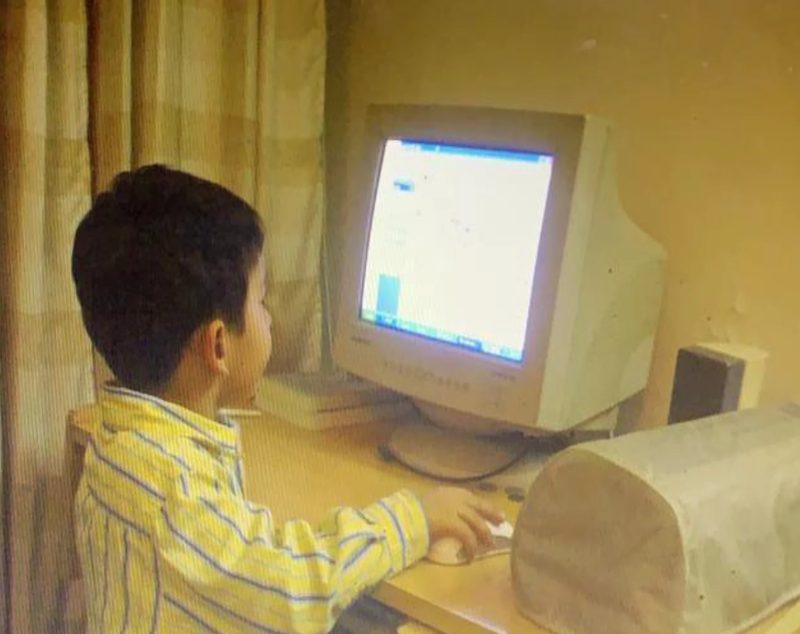
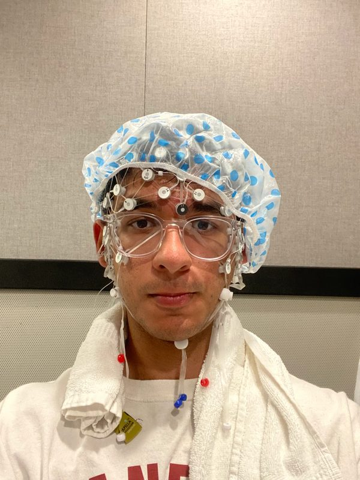
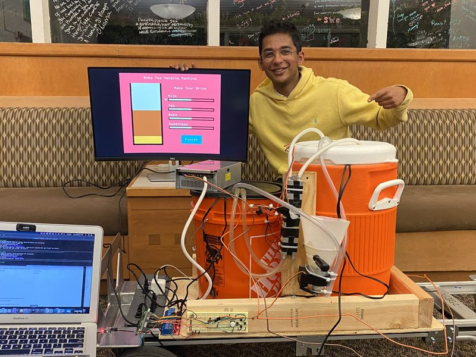
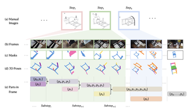
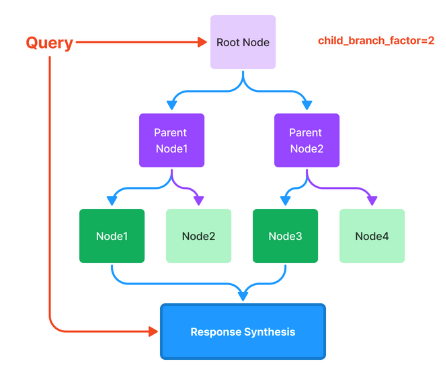
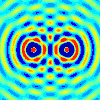

Email: shubh@cs.stanford.edu
Twitter
LinkedIn
Google Scholar
I work on scaling energy infrastructure in the United States. I sold my last company to American Terawatt, where I now lead the research team.
In the past, I trained and worked on inference optimization of generative AI models. I had the privilege to do this with remarkable colleagues whom I now call friends: at Meta Superintelligence Labs (FAIR), the Stanford Artificial Intelligence Laboratory (SAIL), and Pika Labs. It taught me that scaling infrastructure is important, and motivated me to understand the whole vertical stack and become an energy and infrastructure nerd.
I love working on impactful projects. Some memorable ones during my undergrad at Stanford:
NeuralSet: A High-Performing Python Package for Neuro-AI
Meta Superintelligence Labs (FAIR), 2026

IKEA Manuals at Work: 4D Grounding of Assembly Instructions on Internet Videos
NeurIPS Datasets and Benchmarks, 2024

RAPTOR: Recursive Abstractive Processing for Tree-Organized Retrieval
International Conference on Learning Representations (ICLR), 2024

A Robust Machine Learning Based Framework for the Automated Detection of ADHD Using Pupillometric Biomarkers and Time Series Analysis
Nature Scientific Reports, 2021